Retorno de PA
Este processo permite o retorno de peças que não serão retrabalhadas, desta forma, o usuário consegue finalizar uma OP sem realizar a entrada de PA para todas as quantidades planejadas.
A opção de Retorno PA, fica disponível apenas nas OPs de Retrabalho que possuem o status Liberado. Com isso é possível selecionar a opção e iniciar o processo.
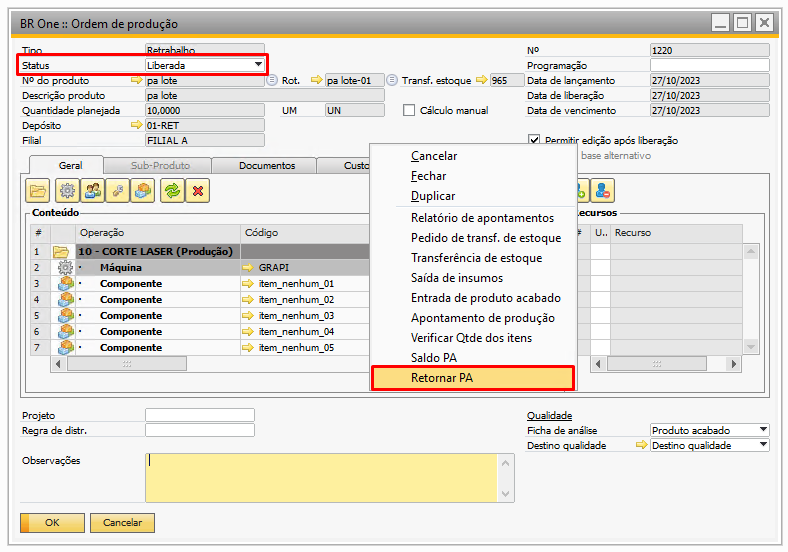{kind=link}
Ao clicar em Retorno PA, será exibido em tela uma mensagem do sistema:
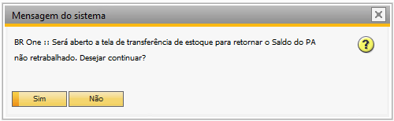{kind=link}
BR One :: Será aberto a tela de transferência de estoque para retornar o Saldo do PA não retrabalhado. Deseja continuar?
Caso usuário clique em Não o processo de retorno será cancelado, caso usuário clique em Sim processo continuará, onde será aberto a tela de transferência de estoque para realizar o retorno do PA não retrabalhado.
A tela de transferência de estoque gerada no processo de retorno de PA, virá com todos os campos preenchidos, neles estarão os dados referentes a OP de Retrabalho. Dentre todos os campos preenchidos o usuário conseguirá alterar os valores de apenas dois campos:
Para depósito: virá preenchido com o depósito utilizada na transferência de estoque gerada na liberação da OP, porém, é permitido ao usuário altera-lo para um depósito a sua escolha.
{kind=link}
Quantidade: o campo quantidade virá preenchido com o valor existente no campo Quantidade pendente da aba Custos da OP de Retrabalho. Usuário poderá alterar a quantidade para um valor que seja menor que a existente no campo Quantidade pendente.
{kind=link}
Abaixo exemplo de transferência de estoque gerada no processo de retorno de PA, utilizando as informações da OP acima:
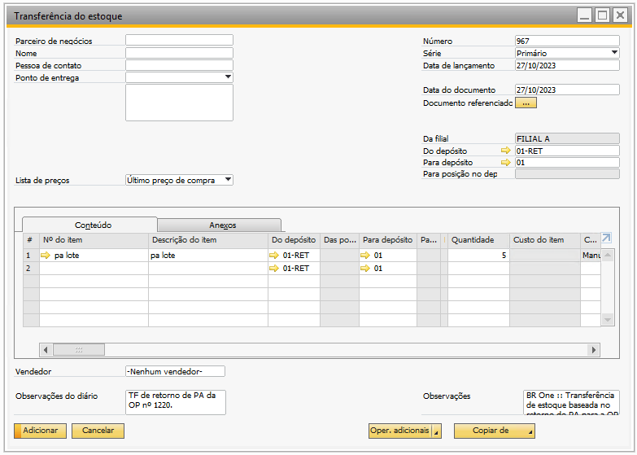{kind=link}
Para os campos editáveis da transferência acima, existem validações que garantem a qualidade do processo, entre elas temos:
Caso usuário altere o campo Para depósito e informe um depósito de outra filial, ao clicar em adicionar o add-on retornará a seguinte mensagem de erro:
{kind=link}
O depósito não está atribuído a mesma filial do documento [Transferência do estoque - Para o código de depósito] , ‘xx’ [Mensagem 1320000747-9]
Caso usuário altere o campo Quantidade, e informe um valor que seja maior que o disponível no campo Quantidade pendente, o add-on irá retornar a seguinte mensagem de erro:
Para itens administrados por lote, ocorrerá uma validação no momento da seleção de lote:
{kind=link}
BR One :: Quantidade informada superior a quantidade disponível/vinculada no lote ‘xxx’ para a OP de Retrabalho ‘xxx’. Quantidade disponível para o lote é ‘x’.
A validação acima, também garante para o item de lote/série, que o usuário selecione apenas os lotes ou séries e quantidades utilizados na transferência de estoque da liberação da OP de Retrabalho.
Para itens administrados por nenhum, ocorrerá uma validação no momento da adição da transferência de estoque, onde o add-on irá retornar a seguinte mensagem do sistema:
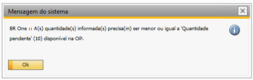{kind=link}
{kind=link}
BR One :: A(s) quantidade(s) informada(s) precisa(m) ser menor ou igual a ‘Quantidade pendente’ (xx) disponível na OP.
Caso usuário altere o campo Quantidade, e informe um valor que seja igual à zero ou um valor de número negativo, o add-on irá retornar a seguinte mensagem de erro, na adição da transferência de estoque:
{kind=link}
Na coluna “Qtd” (Quantidade), entre um valor maior que 0 [Mensagem 131-12]
Para os demais campos preenchidos automaticamente da Transferência de estoque gerada no processo de Retorno do PA, a alteração é bloqueada e caso usuário tente mesmo assim altera-los, o add-on irá retornar a seguinte mensagem de erro:
{kind=link}
BR One :: Não é possível alterar a coluna ‘xxxx’, pois o documento está vinculado à uma OP de retrabalho.
Após usuário preencher corretamente os campos Para depósito e Quantidade e adicionar a transferência de estoque do processo de Retorno do PA, o add-on irá retornar a quantidade de PA para o depósito informado.
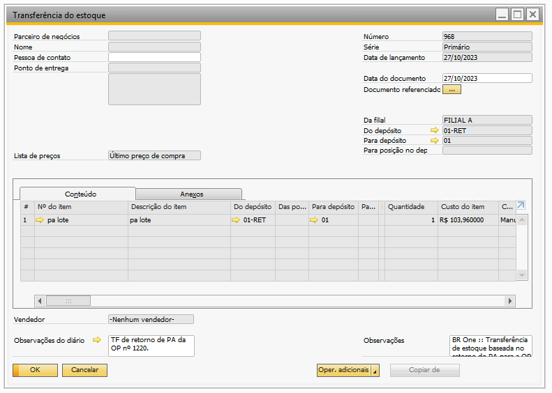{kind=link}
Para controle dos retornos gerados nas OPs de Retrabalho, todas as movimentações geradas pelo processo serão indicadas no campo Quantidade retornada que está localizado na aba Custo.
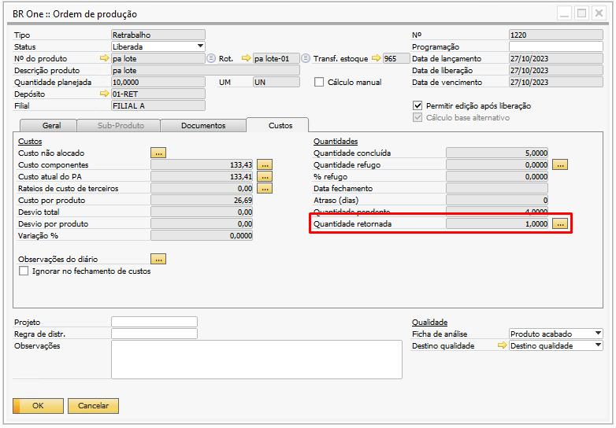{kind=link}
Ao clicar no botão […] será aberto a tela Detalhe quantidade retornada, nela constará todas as transferências de estoque geradas no processo de Retorno do PA.
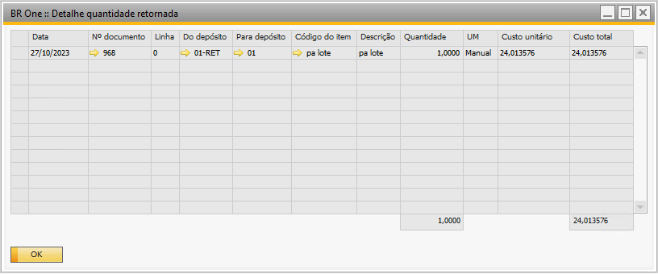{kind=link}
Caso usuário tente alterar o status da OP de Retrabalho de Liberada para Planejada e a mesma possua retornos de PAs efetivados, o add-on irá retornar a seguinte mensagem de erro:
{kind=link}
BR One :: Status não pode ser alterado de ‘Liberada’ para ‘Planejada’, pois já foram realizados apontamentos e/ou movimentações para esta OP.
É possível cancelar as transferências de estoque do processo de retorno de PA, para isto, usuário deve selecionar a transferência que desejada através da tela de Detalhe quantidade retornada.
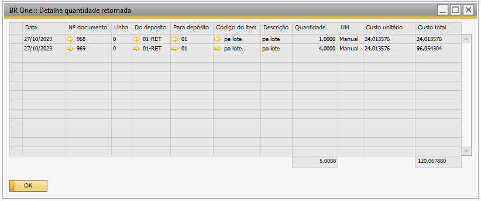{kind=link}
Ao abrir o documento, basta clicar com o botão direito e clicar na opção Cancelar.
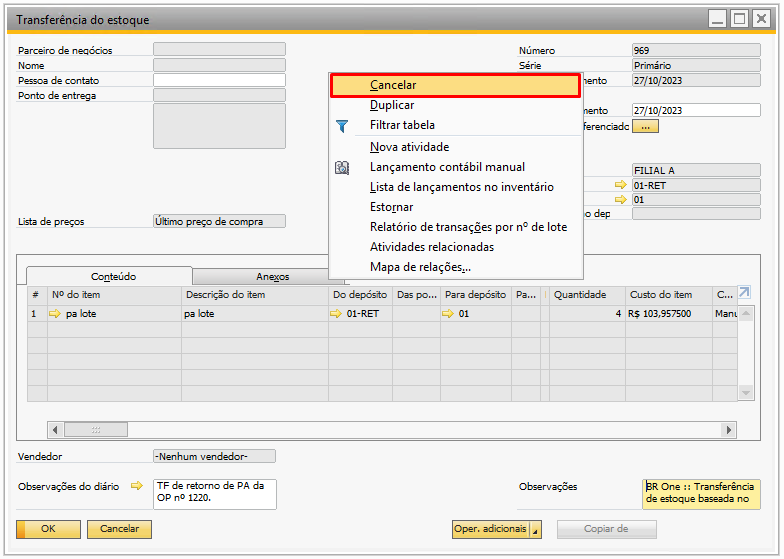{kind=link}
O add-on exibirá a seguinte mensagem de confirmação:
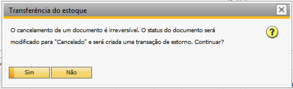{kind=link}
Ao clicar em Não, o processo será cancelado e ao clicar em Sim a transferência de estoque será cancelada. O add-on irá adicionar uma transferência de estoque “reversa”, onde irá retornar as quantidades canceladas para o depósito de retrabalho, deixando elas disponíveis para serem retrabalhadas na OP.
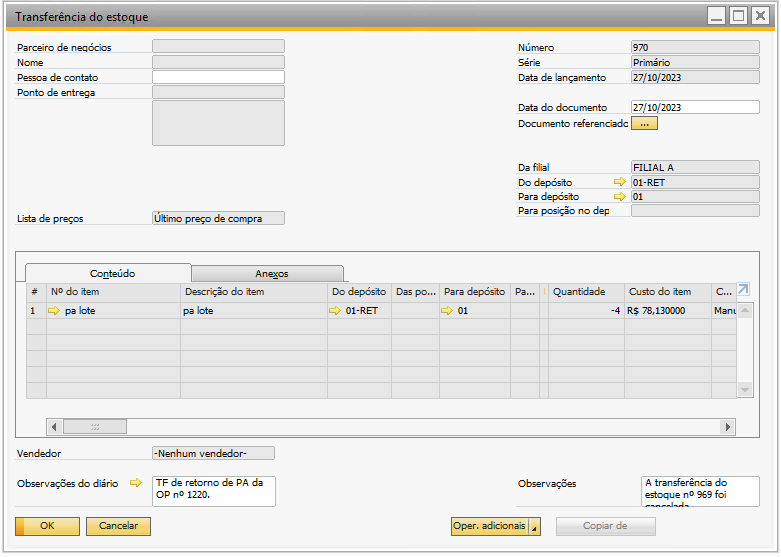{kind=link}
A transferência de estoque referente ao cancelamento do retorno de PA, ficará disponível na tela Detalhe quantidade retornada.
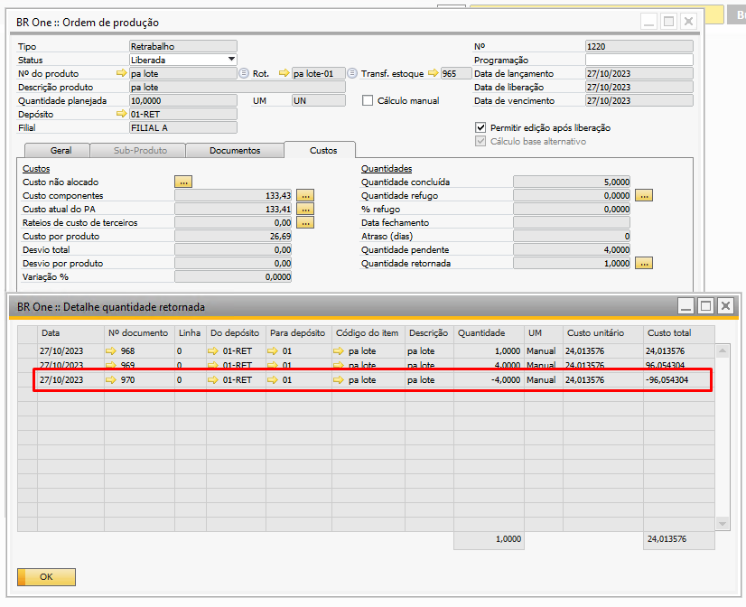{kind=link}
Caso a configuração da liberação da OP de Retrabalho, esteja para gerar um Pedido de transferência de estoque, e este pedido não seja efetivado como uma transferência de estoque, não será possível realizar um retorno de PA.
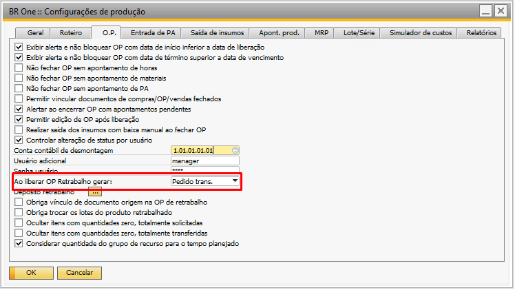 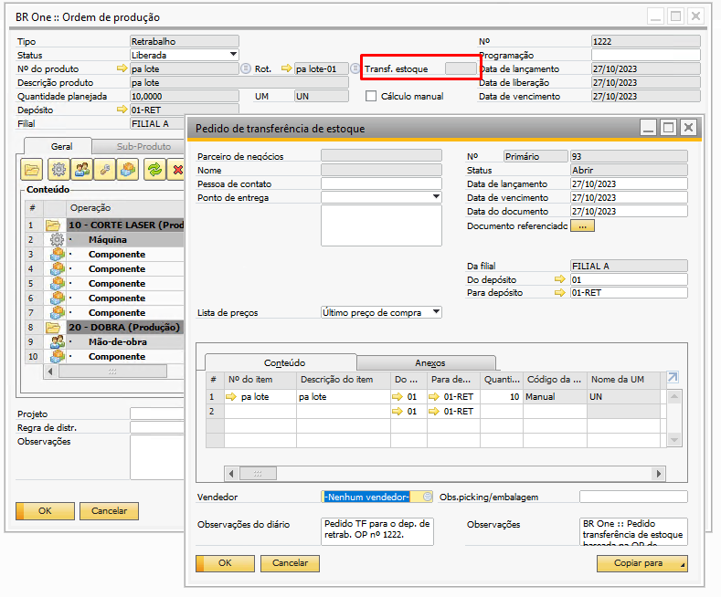{kind=link}
{kind=link}
Caso usuário tente realizar uma entrada ou um retorno de PA, onde a OP não possui uma transferência de estoque vinculada no momento da liberação, o add-on irá retornar a seguinte mensagem de erro:
{kind=link}
BR One :: OP de Retrabalho não possui vínculo com uma ‘Transferência de estoque’, impossível continuar. Favor vincular uma transferência de estoque na OP.